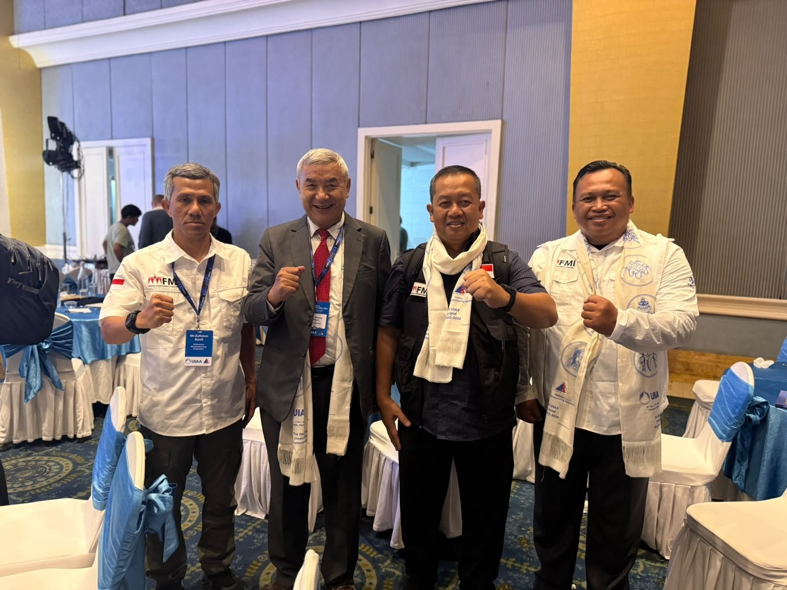
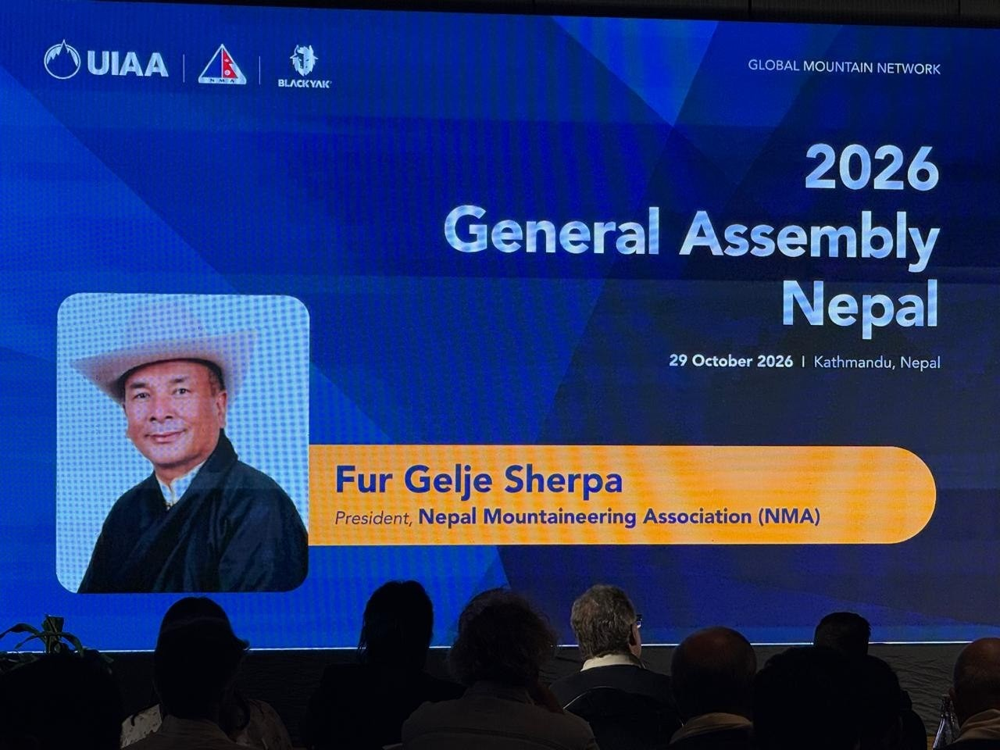

Sidang Umum UIAA 2026 resmi dibuka di Kathmandu, Nepal, Kamis (29/10/2026) petang. Upacara pembukaan berlangsung di Hotel Yak & Yeti, Durbar Marg, mulai pukul 16.45 waktu setempat. Lima orang delegasi Federasi Mountaineering Indonesia (FMI) duduk di antara perwakilan federasi dari puluhan negara.
The 2026 UIAA General Assembly opened in Kathmandu, Nepal, on Thursday evening (29/10/2026). The ceremony took place at Hotel Yak & Yeti on Durbar Marg, starting at 16.45 local time. Five delegates of the Federasi Mountaineering Indonesia (FMI) sat among representatives of federations from dozens of countries.
Menteri Kebudayaan, Pariwisata, dan Penerbangan Sipil Nepal Khadak Raj Paudel membuka acara. Caranya khas Nepal: menyiram tanaman di panggung. Sebelum itu lagu kebangsaan Nepal berkumandang dan hadirin mengheningkan cipta.
Nepal's Minister for Culture, Tourism and Civil Aviation, Khadak Raj Paudel, opened the event. The gesture was distinctly Nepali: watering a plant on stage. Before that, Nepal's national anthem played and the hall observed a moment of silence.

Sambutan pertama datang dari Sekretaris Jenderal Nepal Mountaineering Association (NMA) Rajendra Lama. NMA menjadi tuan rumah tahun ini. Setelah itu tampil Presiden UIAA Peter Muir, Presiden Union of Asian Alpine Associations (UAAA) Dr. Inn Jeoung Lee, dan Presiden NMA Fur Gelje Sherpa. Tari penyambutan mengisi jeda acara.
The first remarks came from Rajendra Lama, General Secretary of the Nepal Mountaineering Association (NMA), this year's host. UIAA President Peter Muir spoke next, followed by Dr. Inn Jeoung Lee, President of the Union of Asian Alpine Associations (UAAA), and NMA President Fur Gelje Sherpa. A welcome dance filled the interval.

Satu agenda budaya melekat di pembukaan: peluncuran edisi khusus majalah Nepal Parbat. Majalah itu terbitan NMA, dipakai menyebarkan kabar kegiatan asosiasi dan promosi pariwisata gunung. Perwakilan Black Yak, Junseok Kang, ikut memberi sambutan. Pidato Menteri Paudel menutup rangkaian sambutan, lalu Fur Gelje Sherpa menyampaikan ucapan terima kasih.
One cultural item is tied to the opening: the launch of a special edition of Nepal Parbat. The magazine is an NMA publication, used to spread news of the association's activities and to promote mountain tourism. Black Yak representative Junseok Kang also spoke. Minister Paudel's address closed the round of speeches, and Fur Gelje Sherpa delivered the vote of thanks.
Delegasi FMI hadir atas undangan penyelenggara. Rombongan dipimpin Brigjen TNI (Mar) Sandy Muchjidin Latief, S.I.P., M.M., yang juga Wakil Ketua PB FMI. Anggotanya Sekretaris Jenderal dr. Muhammad Iqbal El Mubarak, Sp.B-ET, FINACS; Wakil Sekretaris Jenderal Kolonel Marinir Arief Rahman Hakim, M.Tr (Opsla)., M.Han; Kepala Biro Hubungan Luar Negeri Zulfahmi Ramli; dan Ketua Bidang Penelitian, Pengembangan, dan Inovasi dr. Putro Setyobudyo Muhammad, MBL, CIHL. Di aula, mereka memakai selempang putih bertuliskan UIAA General Assembly 2026, kain penyambutan khas Nepal.
The FMI delegation attended at the host's invitation. The group is led by Brigjen TNI (Mar) Sandy Muchjidin Latief, S.I.P., M.M., who is also Deputy Chairman of PB FMI. Its members are Secretary General dr. Muhammad Iqbal El Mubarak, Sp.B-ET, FINACS; Deputy Secretary General Kolonel Marinir Arief Rahman Hakim, M.Tr (Opsla)., M.Han; Head of the Foreign Relations Bureau Zulfahmi Ramli; and Chairman of the Research, Development and Innovation Division dr. Putro Setyobudyo Muhammad, MBL, CIHL. In the hall they wore white scarves printed with UIAA General Assembly 2026, a traditional Nepali welcome cloth.
Pukul 17.40 sampai 18.45, panggung diisi pemaparan laporan Mountain Assessment. Tim penyusunnya datang dari kalangan surveyor dan ahli geomatika Nepal: Madhu Sudan Adhikari, mantan Presiden Nepal Surveyors Association; Er. Mahesh Thapa, Presiden Nepal Geomatics Engineering Society; Anish Dahal; Thaneshwor Guragai; dan Er. Khim Lal Gautam, Chief Survey Officer di Departemen Survey Nepal.
From 17.40 to 18.45 the stage hosted the presentation of the Mountain Assessment report. The team comes from Nepal's surveyors and geomatics community: Madhu Sudan Adhikari, former President of the Nepal Surveyors Association; Er. Mahesh Thapa, President of the Nepal Geomatics Engineering Society; Anish Dahal; Thaneshwor Guragai; and Er. Khim Lal Gautam, Chief Survey Officer at the Survey Department of Nepal.
Bagi Indonesia, forum ini bukan panggung asing. Nepal dan Indonesia sama-sama negara pegunungan, tetapi karakter gunungnya berbeda. Nepal punya Himalaya bersalju. Indonesia punya gunung api tropis di kawasan Ring of Fire, tersebar di lebih dari 17 ribu pulau. Pertukaran pengalaman soal jalur, keselamatan, dan akses kawasan menjadi bahan utama delegasi.
For Indonesia this is not an unfamiliar stage. Nepal and Indonesia are both mountain nations, but the mountains differ in character. Nepal has the snow-covered Himalaya. Indonesia has tropical volcanoes in the Ring of Fire, spread across more than 17,000 islands. Exchanging experience on routes, safety, and access to mountain areas is the delegation's main material.
Sidang Umum adalah forum tertinggi UIAA, induk federasi pendakian gunung dan panjat tebing dunia yang berdiri Agustus 1932 di Chamonix, Prancis. Per Sidang Umum 2025, UIAA punya 99 asosiasi anggota di 77 negara yang mewakili 3,45 juta pendaki. Sesi sidang berjalan 30 dan 31 Oktober 2026. Delegasi FMI berada di Kathmandu sampai 2 November 2026.
The General Assembly is the highest forum of the UIAA, the world body for mountaineering and climbing founded in August 1932 in Chamonix, France. As of the 2025 General Assembly, the UIAA has 99 member associations in 77 countries representing 3.45 million climbers. Assembly sessions run on 30 and 31 October 2026. The FMI delegation stays in Kathmandu until 2 November 2026.
Pembukaan Sidang Umum UIAA 2026 dalam Tujuh Slide
The Opening of the 2026 UIAA General Assembly in Seven Slides
Versi ringkas untuk dibagikan di Instagram, dari materi yang sama dengan artikel ini.
A short version to share on Instagram, built from the same material as this article.